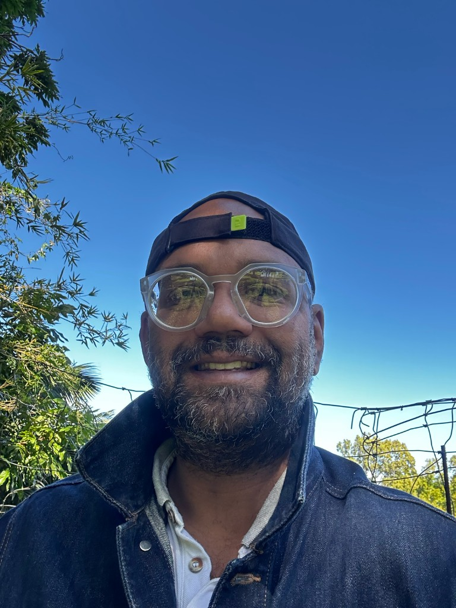
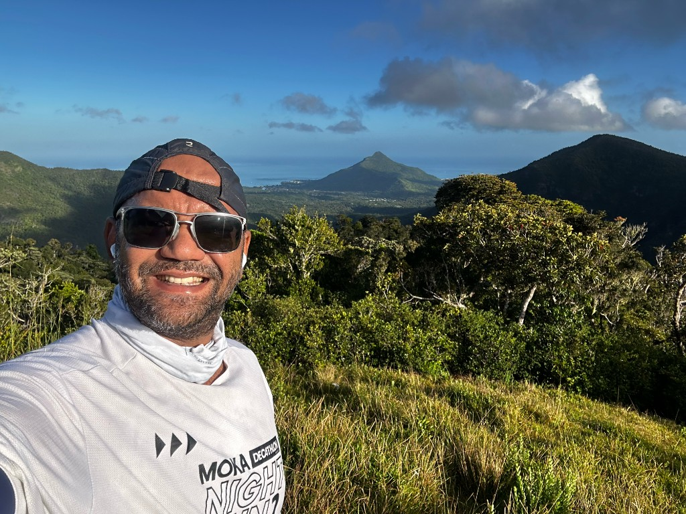
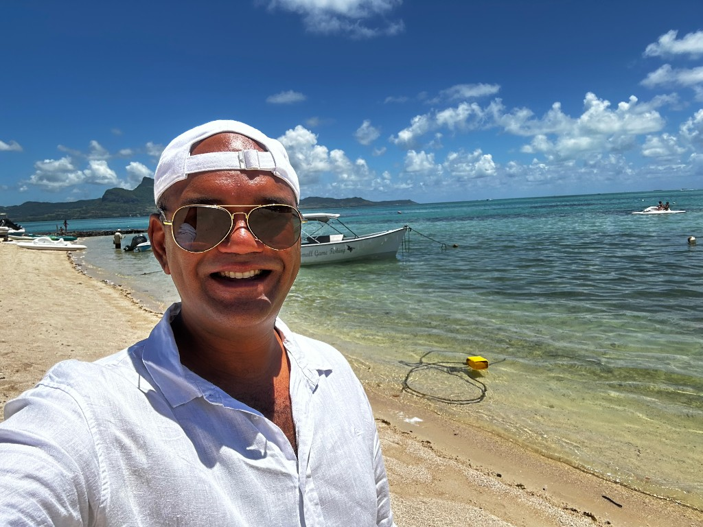
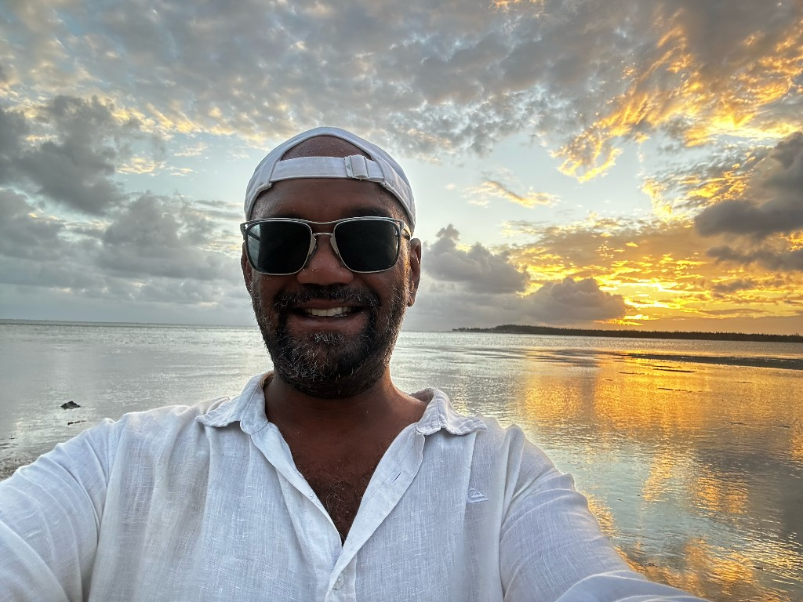

Gallery
Photos
Professional portraits, Rotaract and Rotary moments, and personal travel and outdoors—click any image to open the full size in a new tab.
-

Evening professional — blazer, lapel pins, outdoor lighting -
Studio headshot — suit and red tie -

Outdoor evening — formal dress, social setting -

Smart-casual — blazer, outdoor daylight -

Rotary fellowship — gala lighting, Rotary pins -

Rotaract Beau Bassin / Rose Hill — club banner -

Outdoors — denim, blue sky -

Hiking — ridge line, sea view -
On the water — boat day -

Beach day — sun, sea, travel -

Sunset — coast at dusk